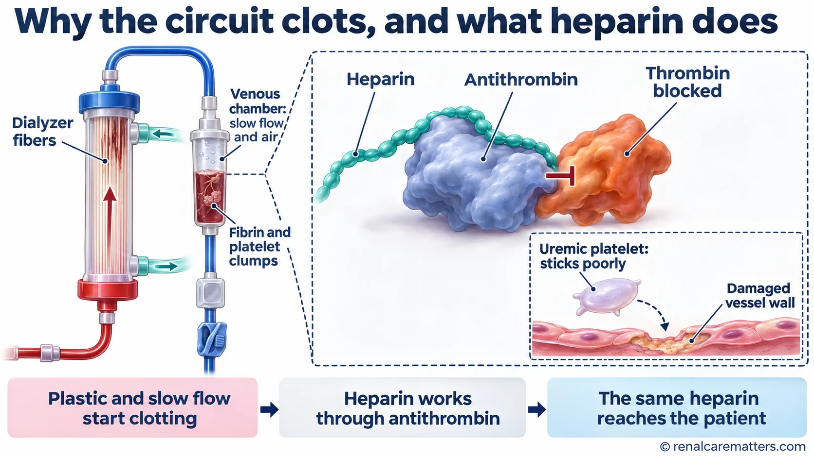
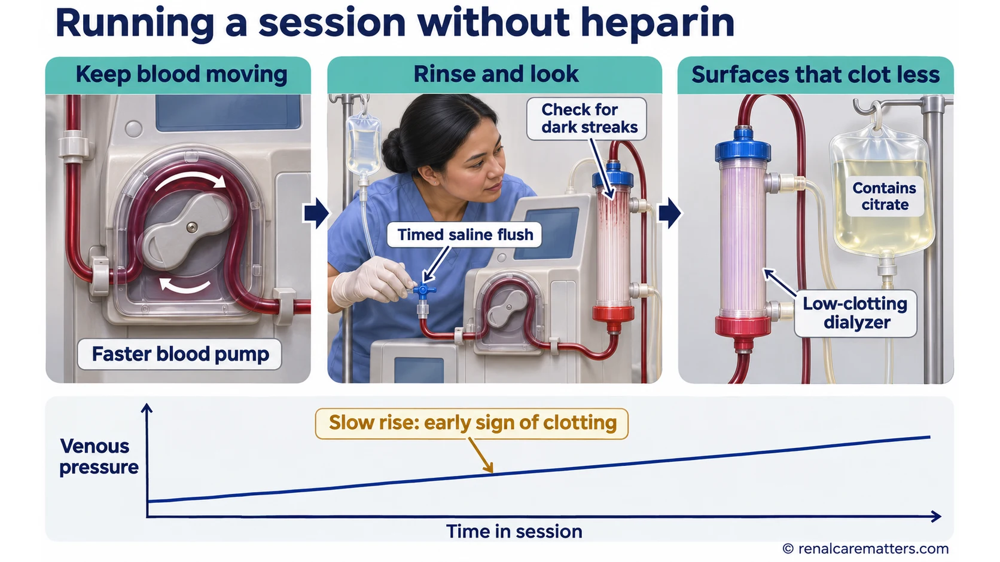
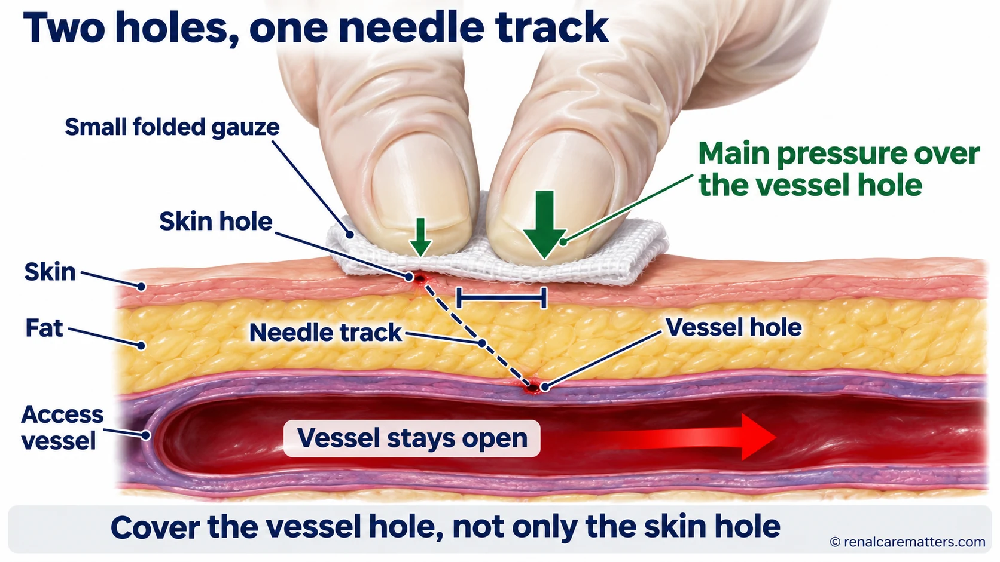
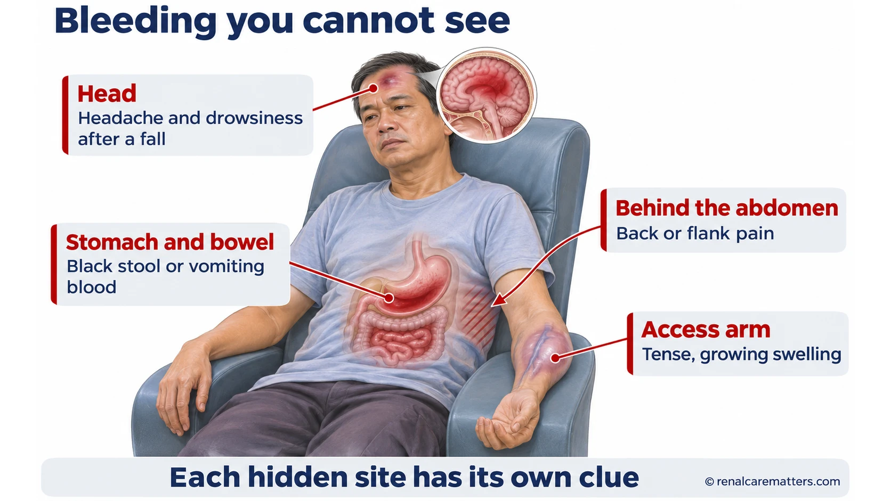
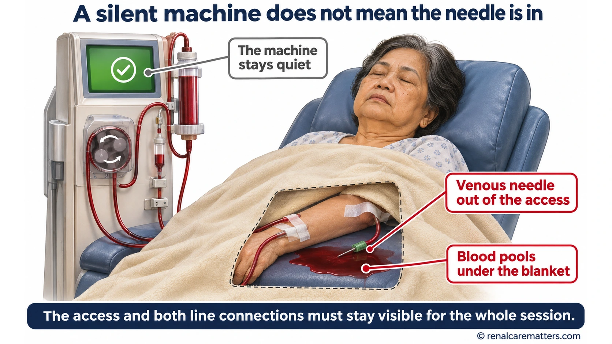

Why heparin is used, when to reduce or omit it, and how to manage bleeding from the access and elsewhere.
PublishedNailathalaGipatikPepalwal:ReferencesMga SanggunianMga TinubdanReng Reperensya:21Audience: Physicians who cover hemodialysis shifts · attending nephrologists, medical directors, and head nurses who orient themRead timeOras ng pagbasaOras sa pagbasaOras ning pamamasa:
This module is study material for physicians on duty in hemodialysis units. It explains the reasoning behind common decisions; it is not a protocol. At the chairside, follow your unit’s protocol and ask the attending nephrologist for guidance. Doses and cut-off values are set by your unit. Every case is fictional.
Learning objectives
After this module you should be able to
Explain why the dialysis circuit clots, how heparin prevents it, and why uremia, anemia, and other drugs add to the risk of bleeding.
Run a bleeding-risk check before each session and escalate a patient who may need reduced or no heparin.
Describe how a session with little or no heparin is run, and what it costs in clotting and lost treatment.
Manage prolonged needle-site bleeding and recognize hidden bleeding in the gut, head, retroperitoneum, or access, following your unit’s protocol.
Recognize the timing and clues of heparin-induced thrombocytopenia and use the 4Ts score to decide when to call.
Handle the patient who takes an anticoagulant or antiplatelet drug, or who has had a recent procedure, by asking the right questions and calling the attending nephrologist.
Pre-testBefore you read, answer the 8 self-assessment questions and note your score. After the module, select New set of questions and compare. The difference is what you learned; the questions you still miss are what to reread.
Start here
The big picture, in plain words
In plain wordsBlood in a glass test tube clots within minutes. Blood that flows through plastic tubing and a dialyzer behaves the same way. Heparin is the brake that keeps it liquid inside the tubing for the length of the session.
The picture has a limit. The tubing is not a closed tube. Heparin flows back into the patient, so the brake also works in every fresh wound: a tooth socket, a biopsy site, a needle hole, an ulcer. The dose that protects the circuit can reopen a wound.
Figure 1 · Key terms for this module
Unfractionated heparinThe usual blood thinner for the dialysis circuit. It acts within minutes and its effect fades over a few hours.
AntithrombinA natural protein that switches off clotting enzymes. Heparin makes it work far faster.
Heparin-free dialysisA session run with no systemic blood thinner, using other measures to keep the circuit open.
Uremic platelet dysfunctionPoor sticking and clumping of platelets in kidney failure, which prolongs bleeding.
Heparin-induced thrombocytopenia (HIT)An immune reaction to heparin that lowers the platelet count and causes clots.
4Ts scoreA bedside score that estimates how likely HIT is before any laboratory test.
Direct oral anticoagulant (DOAC)A tablet blood thinner that blocks one clotting enzyme directly, such as apixaban or rivaroxaban.
Most sessions run safely on the usual heparin order. A few patients arrive with a fresh wound, a hidden bleed, a new blood thinner, or a falling platelet count. Your work is to find those patients before the heparin is given, to control bleeding when it happens, and to call the attending nephrologist early. You report the risk; the nephrologist decides the dose.
Opening case · fictional
Case: Dental extraction yesterday
Mrs. Corazon “Cora” Manalastas, 59, has dialyzed on Tuesdays, Thursdays, and Saturdays for four years through a left forearm fistula. She takes aspirin. Since a hospital stay last month for new atrial fibrillation, she also takes an anticoagulant prescribed by her cardiologist.
It is Thursday, 1:15 p.m., before needling. She mentions that two lower molars were pulled yesterday afternoon at a dental clinic in Malabon, and she spat a little blood overnight. The nurse, Mr. Jun Ramirez, has the standard heparin bolus drawn up. He has checked her vital signs and her mouth. One socket holds a small clot; the other is oozing slightly.
Her blood pressure is 142/80 mm Hg. Her heart rate is 92 per minute and irregular. Last week’s monthly labs showed a hemoglobin of 9.6 g/dL and platelets of 188 × 109/L. These are illustrative values, not targets.
Before reading on, decide:
Should the heparin bolus be given as ordered, and who decides?
What three facts must you collect before you call the attending nephrologist?
If the session runs with little or no heparin, what will you watch for during it?
Keep your answers in mind. The lesson gives you what you need, and the case review near the end shows one sound response.
Lesson · part 1
Why the circuit clots and what heparin does
Blood clots wherever it meets a surface that is not healthy vessel lining, and a dialysis circuit is meters of such surface.1,2

Figure 2. Plastic surfaces and slow flow start clotting in the circuit. Heparin works through antithrombin to block thrombin. Uremic platelets stick poorly, so the same heparin also reaches a patient who already bleeds easily.
Three features push the blood toward clotting. Plastic and membrane surfaces start the contact pathway, and platelets stick to them. Blood slows and swirls in the venous chamber, where it also meets air. And the dialyzer removes water, so blood thickens inside the fibers. Each leads to thrombin, the enzyme that turns fibrinogen into fibrin strands, which with platelets block the fibers one by one.
Heparin binds antithrombin, a natural brake on clotting, and makes it act far faster against thrombin and factor Xa. The effect is greatest during dialysis and fades over the hours after it. That is why needle sites bleed at the end of a session, and why a wound can bleed again that evening.
Why the dialysis patient bleeds more easily
Module 4 explained that uremic platelets stick and clump poorly, and that dialysis only partly corrects this. Anemia adds to it. Red cells crowd the center of flowing blood and push platelets toward the wall, so with fewer red cells, fewer platelets reach an injury. Raising the hematocrit improves the bleeding time, a laboratory surrogate for bleeding risk.3
Factor
What it does
What you may notice
Circuit surface and slow flow
Starts clotting inside the circuit
Dark streaks in the dialyzer, clot in the venous chamber, rising circuit pressures
Heparin
Blocks thrombin in the circuit and in the patient
Longer bleeding from needle sites and fresh wounds
Uremic platelets
Weak sticking and clumping
Oozing from small wounds, easy bruising
Anemia
Fewer platelets pushed toward the vessel wall
More oozing when hemoglobin is low
Other drugs
Aspirin, clopidogrel, warfarin, and the DOACs add their own brake
Bleeding that is out of proportion to the wound
How much heparin, and who decides
No heparin regimen for maintenance hemodialysis is supported by trials. Units use weight-based, fixed, or low-dose schedules and change them on clinical signs.1 One United States program moved 66 patients to a low-dose protocol and compared before with after. Heparin per session fell by more than half. The urea reduction ratio (URR), a surrogate for dialysis dose, was 73.0% on the low dose and 71.2% on the standard dose.4 Moderate dialyzer clotting rose slightly. The study was not randomized and did not test bleeding or survival. It shows that a lower dose can keep the circuit working, not that it is safer.
Learn your unit’s standard order and who may change it. You do not change the dose. You notice when the balance has shifted and say so before the bolus is given.
RememberHeparin protects the circuit and threatens every fresh wound in the patient. Ask about wounds before every session.
Lesson · part 2
The bleeding-risk check before each session
Think of the check as a gate: five questions between the patient and the heparin bolus. Five “no” answers let the usual order go ahead. Any “yes” holds the bolus until the attending nephrologist has heard.
Gate question
Why it matters
What to look for or ask
1. Any surgery, biopsy, tooth extraction, or catheter insertion in the past few days?
A fresh wound holds only a young clot, and heparin stops it from growing firm
Date and time of the procedure, sutures or packing, oozing now
2. Any active or recent bleeding?
Heparin adds to bleeding that has already started
Black stool, vomiting blood, nosebleed, blood in urine, needle sites that bled long last session
3. Any fall or head injury?
Bleeding inside the skull can build slowly over hours to days
Headache, drowsiness, confusion, new weakness, bruises on the head
4. Any new anticoagulant or antiplatelet drug?
The session heparin adds to the brake the patient already takes
Drug name, dose, time of the last dose, who prescribed it
5. Low platelets or a large hemoglobin drop on the latest labs?
Few platelets, or a fall in hemoglobin, may signal a bleed or HIT
Compare with the previous result, not only with the normal range
The gate is a teaching tool built from the risks that sources on heparin describe, not a validated score.1,3 If your unit’s protocol has its own version, use it.
Why the gut deserves its own question
Upper gastrointestinal (GI) bleeding is the hidden bleed you are most likely to meet. In a United States Renal Data System (USRDS) cohort, 698 first admissions for upper GI bleeding occurred over 30,648 patient-years. After adjustment, cardiovascular disease (relative risk 1.32), current smoking (1.11), and inability to walk independently (1.32) were associated with bleeding. Aspirin, antiplatelet, and anticoagulant use were not significantly associated, but this 1990s cohort was not designed to test drug effects, so it does not show that blood thinners are safe.5 Among 50,497 episodes of nonvariceal upper GI bleeding in dialysis patients, 30-day mortality was 10.7%.6 Both studies were observational. They support asking about black stool at every session.
Figure 3 · Heparin decision at the chair
Ask the five questionsWith the nurse, before the heparin syringe is opened. Record each answer.
All answers noThe usual heparin order goes ahead.
Any answer yesHold the bolus. Do not needle yet if bleeding is active or the patient looks unwell.
Look and measureVital signs, the wound, the needle sites, the latest hemoglobin and platelets.
Call the attending nephrologistReport the yes answers, what you saw, and the drugs with their last doses.
Follow the plan givenRecord the plan and who decided.
Worked example A. Bleeding-risk sort before the bolus (illustrative walk-through). Mrs. Manalastas, from the opening case. 1. Procedure in the past few days: yes (two molars pulled about 21 hours ago). 2. Active bleeding: yes (oozing from one socket). 3. Fall or head injury: no. 4. Anticoagulant or antiplatelet drug: yes (an anticoagulant started last month, plus aspirin). 5. Low platelets or hemoglobin drop: no (platelets 188 × 109/L). Result: three yes answers, one of them active oozing. She sits in the “call before heparin” lane of the flow above. What this tells you: the bolus waits and the nephrologist is called now. What it does not tell you: whether she needs a reduced dose, no heparin, or a different method. That choice is the nephrologist’s.
Stop and callStop and call the attending nephrologist before any heparin is given when any gate answer is yes. If you cannot reach the nephrologist, follow the unit’s escalation list. Do not give the standard bolus to fill the gap.
Lesson · part 3
Running a session with little or no heparin
Picture a river in winter. Moving water does not freeze; water pooled at the edges does. A session without heparin keeps the blood moving, rinses where it pools, and uses surfaces that clot less.

Figure 4. A session with little or no heparin keeps blood moving, rinses the circuit at set times, and may use a dialyzer or dialysis fluid that clots less. A rising venous pressure is an early sign of clotting.
Methods vary by unit, and your unit’s protocol sets every number.1,2
Method
How it keeps the circuit open
Limits
Higher blood flow, as the prescription allows
Less time for blood to stand still in the circuit
Limited by the access and the patient
Saline flushes at set times
Rinses the dialyzer and lets staff see early clotting
The flush volume must be removed again as fluid
Low-clotting or heparin-grafted dialyzer
Membrane surface starts less clotting
Cost and supply
Citrate-containing dialysis fluid
Citrate binds calcium, which clotting needs, at the membrane
Availability in the Philippines varies; ask your unit
Regional citrate in the circuit
Citrate infused before the dialyzer, calcium replaced after it
Needs close monitoring; mainly a hospital method
What the evidence shows
In 12,468 older United States patients starting hemodialysis, 836 (6.7%) were dialyzed heparin-free. A history of bleeding and lower hemoglobin and platelets made it more likely. Heparin-free dialysis was not associated with less bleeding (hazard ratio [Hazard ratio (HR)] 1.15, 95% confidence interval [confidence interval (CI)] 0.83 to 1.60), nor with more thrombosis or death.7 The cohort was observational, and patients went heparin-free because they were already at risk, so the comparison is confounded. Omitting heparin is no guarantee of safety.
Two small randomized crossover trials tested methods. EvoCit dialyzed 26 patients with a heparin-grafted dialyzer, with citrate-enriched dialysis fluid and no systemic heparin or with heparin. Kt/V, a surrogate for dialysis dose, was 1.47 versus 1.50, which met the noninferiority margin, but 4.2% of heparin-free sessions ended early for clotting, against none with heparin.8 The SAFE pilot used an asymmetric triacetate dialyzer without anticoagulant in 20 patients. With citrate-containing dialysis fluid, 90.8% of sessions finished without early clotting; with predilution hemodiafiltration, 83.3% did.9 Neither trial measured bleeding or death. A heparin-free method keeps most sessions running, and the minority that clot cost blood and treatment time.
Watch for steadily rising venous or transmembrane pressure, dark streaks during a flush, and a growing clot in the venous chamber. Module 16 covers the clotted circuit. Your part is to see the trend and call before the circuit is lost.
Worked example B. Blood lost with a clotted circuit (illustrative arithmetic, not a device value). Method: red-cell volume lost = blood volume in the circuit × hematocrit. Suppose the dialyzer and lines hold about 150 mL of blood (illustrative; the real volume is printed on the dialyzer and line set labels). Hematocrit 30% (illustrative). Red-cell volume lost = 150 mL × 0.30 = 45 mL, plus about 105 mL of plasma. Two clotted circuits in a month = about 90 mL of red cells. What this tells you: why repeated clotting matters in anemia (Module 21). What it does not tell you: whether this patient needs any change in treatment.
Stop and callStop and call the attending nephrologist when pressures rise steadily or clot appears in a session with little or no heparin, and before any decision to end the session early. Report the time into the session and the treatment delivered so far.
Lesson · part 4
Bleeding after the needles come out
Every needle leaves two holes, one in the skin and one in the vessel wall, a short distance apart because the needle enters at an angle. Pressure on the skin hole alone can leave the vessel hole bleeding.

Figure 5. The needle enters at an angle, so the hole in the vessel lies a little beyond the hole in the skin. Pressure must cover the vessel hole, not only the skin hole.
Module 9 teaches the technique: two fingertips and a small gauze over both holes, firm enough to stop the bleeding while a thrill remains, with no tourniquet.10 This module asks why one patient bleeds longer than usual.
Figure 6. Press with two fingertips and a small gauze, over the skin hole and the vessel hole. Stop the bleeding without stopping the thrill. Do not use a bulky pad.
Why a needle site keeps bleeding
Platelets plug the hole, and fibrin knits the plug into a firm clot. Anything that weakens either step, or pushes harder against the plug, prolongs bleeding.
Pattern
Likely cause
What you report
Both sites bleed long, in one session only
More heparin effect than usual: a mid-session dose, a short session, or a new blood thinner
The heparin given and its timing; any new drug
Both sites bleed long, session after session
Uremic platelets, anemia, or a heparin order that no longer fits
The pattern, the latest hemoglobin and platelets
The venous site bleeds long, again and again
A narrowing downstream raises pressure in the access (Module 9)
The pattern, the thrill and bruit, any change in venous pressure during dialysis
Bleeding through thin, shiny skin or a scab
A weakened wall over an aneurysm or an infected site
Urgently, as a possible impending rupture
Reviews of dialysis emergencies put pressure first and the search for a cause second. Their advice rests on experience, not trials.11,12
Figure 7 · Bleeding after needle removal
Press on the right spotTwo fingertips and a small gauze over the skin hole and the vessel hole.
Hold for the set timePress for the time your unit’s protocol sets, without lifting to look.
CheckLift gently. Look for oozing, and feel for the thrill.
Still bleedingPress again for the set time. Check vital signs. Ask about blood thinners and recent wounds.
Bleeding not controlledKeep pressing. Call for help and call the attending nephrologist at once.
A single long bleed needs a note: time pressed, the thrill afterward, and the heparin given. A pattern needs a report.
Stop and callStop and call when correct pressure does not control the bleeding, when blood spurts from an access, or when bleeding comes with a fall in blood pressure or a rising pulse. Keep pressing while someone else calls. Module 9 covers the response to a ruptured access.
Lesson · part 5
Bleeding you cannot see
Some bleeding happens out of sight: into the gut, the skull, the space behind the abdomen, or the tissues around the access. You find it by its effects.

Figure 8. Blood can leave the circulation where you cannot see it: into the gut, the head, the space behind the abdomen, or the tissues around the access. Each site has its own clue.
How a hidden bleed shows itself
Blood loss lowers the volume returning to the heart, so the pulse rises and the vessels tighten. Fluid removal pulls the same way. The pressure falls earlier and further than the fluid removed explains. Module 13 covers the falling pressure; a hidden bleed is one of its dangerous causes.
Site
Clues at the chair
First move, while you call
Upper or lower gut
Black, tarry stool. Vomiting blood or coffee-ground material. Pallor, fast pulse, dizziness on sitting up
Stop heparin per protocol. Vital signs. Urgent hemoglobin per protocol. Prepare for transfer
Head
Headache, drowsiness, confusion, vomiting, or new weakness, especially after a fall
Stop heparin per protocol. Level of consciousness and pupils. Urgent transfer for imaging
Retroperitoneum, the space behind the abdomen
Back, flank, or groin pain, often after a femoral catheter or a procedure. A falling pressure
Stop heparin per protocol. Vital signs. Urgent transfer
Access arm
A tense, growing swelling or bruise around the access, often after a missed needle
Pressure, as Module 9 describes. Check the thrill. Call
The circuit
A dislodged needle or an open connection, often under a blanket
Module 16. Stop the blood pump and press on the site

Figure 9. The circuit can hide a bleed too. Module 16 covers the dislodged needle.
The Glasgow-Blatchford score helps sort suspected upper GI bleeding. One of its items is blood urea, which is high in every dialysis patient, so the score overstates risk. Treat it as context for your call.
Treating the platelet defect is the nephrologist’s call
The nephrologist may treat the platelet defect itself. Desmopressin raises factor VIII and large von Willebrand factor proteins, which help platelets stick. In a randomized, double-blind crossover trial of 12 patients with uremia, it shortened the bleeding time in all of them, for at least four hours in most.13 Bleeding time is a surrogate, not blood loss. Reviews also describe conjugated estrogens, cryoprecipitate, more effective dialysis, and correction of anemia, which differ in onset and duration.14,3 The evidence is small, and the choice is the nephrologist’s.
For any hidden bleed: stop the heparin per protocol, assess, stop fluid removal if the pressure is falling, and call. Instability or a suspected head or internal bleed usually means ending the session and transfer.
Stop and callStop and call the attending nephrologist at once, and arrange transfer to the emergency room, for any suspected internal bleed, any head injury in a patient on an anticoagulant or antiplatelet drug, or any bleed with a falling pressure and rising pulse. Do not wait for the hemoglobin result before you call.
RememberA pressure that falls faster than the fluid removed explains, with a rising pulse, is a bleed until proved otherwise.
Lesson · part 6
Heparin-induced thrombocytopenia: timing and clues
In a few patients, the immune system tags heparin bound to a platelet protein, platelet factor 4. The antibodies coat platelets and switch them on. Activated platelets release clotting signals and are cleared from the blood, so the count falls while clots form. Fewer platelets with more clotting is the core of heparin-induced thrombocytopenia (HIT).15
The dialysis unit meets HIT mainly in the new patient who received heparin in hospital, or in a patient restarting heparin after a recent exposure. A patient who has dialyzed on heparin for years is past the usual window, so a new fall in platelets more often has another cause.
The T
What it asks
In the dialysis unit
Thrombocytopenia
How far the platelet count fell, and how low it went
Compare with the count before heparin, not with the normal range
Timing
When the fall began, counted from the start of heparin
Typically 5 to 10 days after heparin starts, sooner after a recent exposure. Ask about heparin in hospital
Thrombosis
New clots or other complications
A newly clotted access or catheter, repeated circuit clotting, a swollen leg, skin lesions at injection sites
Other causes
Whether another explanation is more likely
Infection, other drugs, bleeding, liver disease, a laboratory clump
Each T scores 0, 1, or 2 points. A total of 0 to 3 is low probability, 4 to 5 intermediate, and 6 to 8 high.16 Use the site’s 4Ts calculator, which carries the point definitions, rather than scoring from memory.
What the score can and cannot do
Lo and colleagues tested the 4Ts prospectively in 100 patients in a Canadian hospital and 236 referred to a German laboratory. Only 1 of 64 and 0 of 55 low-score patients had clinically significant antibodies. Intermediate scores carried antibodies in 28.6% and 7.9%, and high scores in 100% and 21.4%.16 A low score rules HIT out well. A higher score raises suspicion, but its meaning varied between settings.
The American Society of Hematology (ASH) 2018 guideline, built with the Grading of Recommendations Assessment, Development and Evaluation (GRADE) method, makes strong recommendations to use the 4Ts score rather than clinical impression alone, and to avoid HIT testing and empiric treatment when the score is low. The choice among non-heparin anticoagulants carries conditional recommendations, and the guideline addresses renal replacement therapy in acute HIT.15
Worked example C. Reading the 4Ts (illustrative values). A new patient’s platelet count is 210 × 109/L before heparin. On day 7 of heparin exposure it is 85 × 109/L. Her graft clotted yesterday. No infection, new drug, or other cause has been found. Thrombocytopenia: the fall is 125 ÷ 210 = about 60%, and the lowest count is well above 20 × 109/L. Timing: day 7, inside the typical window. Thrombosis: a new clot in the access. Other causes: none found. Enter each item in the 4Ts calculator. With any reasonable reading of the thrombosis item, the total falls in the high band (6 to 8). What this tells you: every heparin source stops now, and the nephrologist is called today. What it does not tell you: that she has HIT. Only laboratory testing, an antibody test and, where available, a functional test, can support that.
Stop and callStop and call the attending nephrologist the same day for an intermediate or high 4Ts score, or for a falling platelet count with a new clot. Have every source of heparin held per protocol while you call.
RememberWhen HIT is possible, every source of heparin stops, including the catheter lock and flushes.
Heparin also hides in catheter locks, line flushes, and some coated devices. Ask the nurse to name each one. The replacement anticoagulant and catheter lock are chosen by the attending nephrologist, often with a hematologist.
Lesson · part 7
Blood thinners, antiplatelets, and recent procedures
The session heparin adds to whatever brake the patient already takes. Your questions tell the nephrologist how hard that brake is pressed.
Drug class
Examples
What to ask
What the dialysis evidence shows
Antiplatelet drugs
Aspirin, clopidogrel
Why it was started. Any coronary stent, and when
Stopping after a recent stent carries its own danger; never stop it yourself
Vitamin K antagonist
Warfarin
Last dose. Latest international normalized ratio (INR) and its date
In RENAL-AF, warfarin was in the target range only 44% of the time17
Direct oral anticoagulants (DOACs)
Apixaban, rivaroxaban, dabigatran
Which drug, what dose, time of the last dose
Apixaban is barely removed by dialysis.18 Dabigatran is cleared mainly by the kidneys and builds up
Injected heparins
Enoxaparin
Why it was given, last dose
Cleared by the kidneys, so its effect lasts longer in kidney failure
What the trials in dialysis show
Apixaban is the DOAC best studied in hemodialysis. In a pharmacokinetic study of 7 patients, the reduced dose gave exposure similar to the standard dose in people with normal kidney function. The standard dose, taken by 5 of them, gave levels above that range. Only 4% of the drug was removed by a dialysis session.18 The study measured drug levels, not bleeding or strokes.
Two randomized trials followed. RENAL-AF compared apixaban at the standard dose, or the reduced dose for older or lighter patients, with warfarin in 154 hemodialysis patients with atrial fibrillation. It stopped early because enrollment was slow. At one year, major or clinically relevant nonmajor bleeding occurred in 32% with apixaban and 26% with warfarin (HR 1.20, 95% CI 0.63 to 2.30). Stroke or systemic embolism occurred in 3.0% and 3.3%. The trial was underpowered.17 AXADIA-AFNET 8 randomized 97 patients to reduced-dose apixaban or phenprocoumon, a warfarin-like drug. Major bleeding, clinically relevant nonmajor bleeding, or death occurred in 45.8% and 51.0% (HR 0.93, 95% CI 0.53 to 1.65). No outcome differed.19
A 2026 target trial emulation, an observational analysis designed to mimic a trial, matched 3,978 new apixaban users with 3,978 new warfarin users on hemodialysis. Apixaban was associated with lower rates of ischemic stroke (HR 0.66, 95% CI 0.47 to 0.94) and clinically important bleeding (HR 0.72, 95% CI 0.63 to 0.83). Death did not differ. Patients stayed on apixaban for a median of only 58 days, and residual confounding remains possible.20
The sources do not agree. The randomized trials were too small to detect modest differences, and the large favorable data are observational. Whether any oral anticoagulant helps a dialysis patient with atrial fibrillation remains unsettled. A Kidney Disease: Improving Global Outcomes (KDIGO) Controversies Conference framed this uncertainty in a conference statement, not a graded recommendation.21 Modules 15 and 20 cover atrial fibrillation and prescribing. The HAS-BLED calculator gives context, but it was not developed in dialysis patients.
Recent procedures
No trial tells us how long to reduce or hold heparin after a dental extraction, biopsy, catheter insertion, or minor surgery. Units set this by protocol. Ask the date and time of the procedure, whether sutures or packing were used, and whether the wound is oozing now.
Stop and callStop and call the attending nephrologist before heparin is given for any new anticoagulant or antiplatelet drug, and for any procedure in the past few days. Never stop or hold a patient’s anticoagulant or antiplatelet drug on your own.
The call card
Be exact about the circuit blood. Returning it helps a bleeding patient. It is wrong only when the blood or the circuit is unsafe.
Figure 10 · Call card: bleeding and heparin
RecognizeOozing that will not stop. Blood in the mouth, stool, or vomit. A falling pressure with a rising pulse. Headache or drowsiness after a fall. A swelling access arm. Falling platelets with new clots.
First 2 minutesCorrect pressure on any external site. Vital signs. Check the thrill. Ask about procedures, falls, and blood thinners with their last doses. Check the latest hemoglobin and platelets.
Stop dialysis?Stop heparin per protocol for any active bleeding. End the session, with the nephrologist, for instability, a suspected internal or head bleed, or access bleeding that pressure does not control.
Return the blood?Yes, when the circuit is intact and the patient can take the volume. Returning blood helps a bleeding patient. Do NOT return the blood if the circuit has clotted, if air or hemolysis is suspected, or if the circuit has been opened or contaminated (Module 16). A ruptured access cannot take the blood back; keep pressing.
CallThe attending nephrologist, at once. The emergency room for a suspected internal bleed, a head injury on a blood thinner, or instability. The surgeon or access team for a ruptured access.
WriteWhat bled, where, and for how long. Heparin given and when. Each blood thinner and its last dose. Vital signs. Pressure time. Who was called, when, and what was advised. Where the patient went.
On the floor
Real situations: problems and solutions
These are fictional but typical. For each one, cover the answer, decide what you would do, then compare. Where a step depends on local rules, your unit’s procedure and your supervisor’s direction come first.
The black stool he did not mention
What you see
Mr. Rodel Pascual, 68, takes clopidogrel after a coronary stent. Before needling he looks paler than usual and admits that his stools have been black for three days. His pulse is 104 per minute.
What is likely going on
Black, tarry stool is digested blood from the upper gut. A fast pulse means the loss may already be large. Clopidogrel and uremic platelets both make the bleeding harder to stop.
What to do
Hold the heparin bolus and do not start the session until the attending nephrologist has been called. Check vital signs lying and, if safe, sitting. Arrange an urgent hemoglobin per protocol. Prepare for transfer to the emergency room. Do not stop the clopidogrel yourself.
Why it matters
Heparin given to a patient who is bleeding into the gut adds a third brake on clotting. Stopping an antiplatelet drug after a stent carries its own risk, so that decision belongs to the cardiologist and nephrologist together.
The needle site that bleeds every time
What you see
Ms. Liza Fernandez, 51, has a graft. For three sessions in a row her venous needle site has bled for much longer than usual after removal, although the nurses press correctly.
What is likely going on
Repeated prolonged bleeding from the venous site in a graft suggests a narrowing downstream that keeps pressure high in the graft. Too much heparin effect is the other main possibility.
What to do
Make sure pressure is applied over the vessel hole for the unit’s set time. Check the thrill and listen for a high-pitched bruit. Report the pattern to the attending nephrologist and suggest an access assessment. Do not reduce the heparin yourself.
Why it matters
Treating each bleed alone leaves a narrowing in place that may later clot the graft.
Headache after a fall at home
What you see
Mrs. Imelda Santos, 77, takes warfarin for atrial fibrillation. She mentions in hour one that she slipped in the bathroom two days ago and hit her head. She has had a headache since and feels sleepy today.
What is likely going on
Bleeding inside the skull can build slowly over days in an older person on an anticoagulant. Drowsiness is a warning sign.
What to do
Ask the nurse to stop heparin per protocol. Check her level of consciousness and pupils. Call the attending nephrologist at once and arrange urgent transfer for imaging. End the session and return the blood if the circuit is intact, as advised.
Why it matters
A head injury in an anticoagulated patient is an emergency even when the fall seems minor. Every minute of heparin adds to the bleed.
Platelets falling in the first weeks
What you see
Mr. Nestor Villanueva started hemodialysis twelve days ago after a hospital stay in which he received heparin injections. His platelet count has fallen from 240 to 90 × 109/L (illustrative), and his new catheter clotted yesterday.
What is likely going on
The timing, the fall by more than half, and a new clot fit heparin-induced thrombocytopenia. Other causes still need to be excluded.
What to do
Enter each item in the 4Ts calculator. If the score is intermediate or high, have every source of heparin held per protocol, including the catheter lock and flushes. Call the attending nephrologist the same day. The choice of another anticoagulant is the specialist’s.
Why it matters
Continuing heparin in this condition feeds both the platelet fall and the clotting. A catheter lock is easy to forget.
The dental extraction this morning
What you see
Mr. Arnel Cruz, 45, had a wisdom tooth removed this morning. The socket is packed with gauze and is not oozing. He takes no blood thinners and his platelets are normal.
What is likely going on
A fresh socket is a wound that heparin can reopen, even when it looks dry now. Bleeding often begins near the end of the session or after it, when the gauze is removed while the heparin effect lingers.
What to do
Answer the bleeding-risk gate with the nurse. A recent procedure is a yes, so call the attending nephrologist before the bolus, even though the socket is dry. Follow the plan for reduced or no heparin, and teach him what to do if the socket bleeds at home.
Why it matters
The gate works only if a dry wound still counts as a yes. The decision is the nephrologist’s, and the call takes two minutes.
Field notes
Ask the five gate questions before the heparin syringe is opened, not after. Once the bolus is in, it cannot be taken back.
Ask about the dentist by name. Many patients do not think of a tooth extraction as surgery.
Write down the name of every blood thinner and the time of its last dose. “Blood thinner” alone is not enough for the nephrologist.
When a patient on a heparin-free session has rising pressures in the circuit, call early. A call before the circuit clots saves blood and treatment time.
When platelets fall in a patient who started heparin in the past few weeks, think of the catheter lock as heparin too.
Case review
Back to the case: Dental extraction yesterday
Should the bolus be given as ordered, and who decides? No, not yet. Mrs. Manalastas answers yes to three gate questions: a procedure less than a day ago, a socket that is still oozing, and two drugs that already slow clotting. The standard bolus would reach her sockets within minutes, while their young clots are weakest. You ask Mr. Ramirez to hold the bolus and the needling until the plan is clear. The heparin decision belongs to the attending nephrologist. Your job is to make sure it is made with the facts in hand, before the syringe is emptied.
What three facts must you collect before you call? First, the anticoagulant: its name, the dose, and the exact time of the last tablet. Second, the wound: when the teeth were pulled, whether sutures or packing were used, and how much she is oozing now, which you check yourself with a penlight and gauze. Third, her current state: blood pressure, pulse, signs of blood loss elsewhere, and the latest hemoglobin and platelets. You report this in the Situation, Background, Assessment, Recommendation (SBAR) format from Module 1: Situation, Background, Assessment, Recommendation.
If she dialyzes with little or no heparin, what will you watch? The circuit and the mouth. Steadily rising venous or transmembrane pressure, dark streaks during a flush, or a growing clot in the venous chamber are early signs of clotting, and you call before the circuit is lost. Her own anticoagulant still acts, so you check the socket during the session and the needle sites after removal. Before she leaves, the sites and socket are dry, and she knows what to do if bleeding starts at home.
Interactive case · fictional
Interactive case: “It’s just the iron”
Work through a shift one decision at a time. The panel at the top changes with what you choose. After each choice you see why it is, or is not, the best move; after a weaker one you can try again or carry on and see where it leads. Your first choice at each step is scored. The score stays on this device and nothing is sent anywhere. In real practice, your unit’s protocol and the people responsible for each decision come first.
🚨 Emergency quick card:Needle out, access bleeding. One screen each, saved for use with no signal. Print a copy for the crash cart.
Skills lab · with your preceptor
Skills checklist: Pre-session bleeding-risk check and access hemostasis
Perform this check on a simulated patient or a colleague in a dialysis chair while your preceptor observes and plays the nurse. Then demonstrate hemostasis on a training arm or describe it step by step. Your preceptor rates each step as satisfactory, needs practice, or not observed. Steps marked Critical must all be satisfactory before sign-off. This checklist supports supervised learning; your unit’s own procedure and competency form are the authority. A printable version of every checklist is on the trainer page.
CriticalAsks the five gate questions before heparin is given and records each answer.
Looks for active bleeding in the mouth, nose, needle sites, and catheter exit, and reviews the latest hemoglobin and platelets.
CriticalRecords every anticoagulant or antiplatelet drug by name, with the time of the last dose.
CriticalCalls the attending nephrologist before heparin when any gate answer is yes.
After needle removal, applies firm two-finger pressure with a small gauze over the vessel hole as well as the skin hole, with no tourniquet.
Keeps pressure for the unit’s set time without lifting to check.
CriticalChecks for a thrill after bleeding stops.
CriticalRecognizes bleeding that correct pressure does not control, and escalates at once.
Names the signs of internal bleeding: a falling pressure, a rising pulse, black stool, abdominal or back pain, and headache or drowsiness after a fall.
CriticalUses the 4Ts calculator for a falling platelet count and states that every source of heparin stops when HIT is possible, including catheter locks and flushes.
CriticalStates when the blood in the circuit must not be returned.
Documents the bleeding event, the pressure time, the heparin given, and the calls made.
Placement activity. For two weeks, join the nurse at the start of each session on your shifts and run the five gate questions with each patient before heparin is given. Keep a log of every yes answer, what was found, and the plan the attending nephrologist gave. Review the log with your preceptor and identify one gate question that patients often answer wrongly at first.
Self-assessment
Check your understanding
Each visit draws 8 questions at random from this module’s 15-question bank. Choose the single best answer for each, then select Check answers; an explanation appears under the best answer. Select New set of questions for a different mix. A good target is 7 of 8 on two different sets. Nothing you select is sent anywhere; scoring happens in your browser.
Shen, J. I., & Winkelmayer, W. C. (2012). Use and safety of unfractionated heparin for anticoagulation during maintenance hemodialysis. American Journal of Kidney Diseases, 60(3), 473–486. https://doi.org/10.1053/j.ajkd.2012.03.017
Daugirdas, J. T., Blake, P. G., & Ing, T. S. (Eds.). (2015). Handbook of dialysis (5th ed.). Wolters Kluwer.
Murea, M., Russell, G. B., Daeihagh, P., Saran, A. M., Pandya, K., Cabrera, M., Burkart, J. M., & Freedman, B. I. (2018). Efficacy and safety of low-dose heparin in hemodialysis. Hemodialysis International, 22(1), 74–81. https://doi.org/10.1111/hdi.12563
Wasse, H., Gillen, D. L., Ball, A. M., Kestenbaum, B. R., Seliger, S. L., Sherrard, D., & Stehman-Breen, C. O. (2003). Risk factors for upper gastrointestinal bleeding among end-stage renal disease patients. Kidney International, 64(4), 1455–1461. https://doi.org/10.1046/j.1523-1755.2003.00225.x
Yang, J.-Y., Lee, T.-C., Montez-Rath, M. E., Chertow, G. M., & Winkelmayer, W. C. (2013). Risk factors of short-term mortality after acute nonvariceal upper gastrointestinal bleeding in patients on dialysis: A population-based study. BMC Nephrology, 14, Article 97. https://doi.org/10.1186/1471-2369-14-97
Shen, J. I., Mitani, A. A., Chang, T. I., & Winkelmayer, W. C. (2013). Use and safety of heparin-free maintenance hemodialysis in the USA. Nephrology Dialysis Transplantation, 28(6), 1589–1602. https://doi.org/10.1093/ndt/gft067
François, K., De Clerck, D., Tonnelier, A., Cambier, M.-L., Orlando, C., Jochmans, K., Cools, W., & Wissing, K. M. (2022). Dialyzer performance during hemodialysis without systemic anticoagulation using a heparin-grafted dialyzer combined with a citrate-enriched dialysate: Results of the randomized crossover noninferiority EvoCit study. American Journal of Kidney Diseases, 79(1), 79–87.e1. https://doi.org/10.1053/j.ajkd.2021.04.004
Vandenbosch, I., Dejongh, S., Claes, K., Bammens, B., De Vusser, K., Van Craenenbroeck, A., Kuypers, D., Evenepoel, P., & Meijers, B. (2021). Strategies for asymmetrical triacetate dialyser heparin-free effective haemodialysis: The SAFE study. Clinical Kidney Journal, 14(8), 1901–1907. https://doi.org/10.1093/ckj/sfaa228
Greenberg, K. I., & Choi, M. J. (2021). Hemodialysis emergencies: Core curriculum 2021. American Journal of Kidney Diseases, 77(5), 796–809. https://doi.org/10.1053/j.ajkd.2020.11.024
Saha, M., & Allon, M. (2017). Diagnosis, treatment, and prevention of hemodialysis emergencies. Clinical Journal of the American Society of Nephrology, 12(2), 357–369. https://doi.org/10.2215/CJN.05260516
Mannucci, P. M., Remuzzi, G., Pusineri, F., Lombardi, R., Valsecchi, C., Mecca, G., & Zimmerman, T. S. (1983). Deamino-8-D-arginine vasopressin shortens the bleeding time in uremia. New England Journal of Medicine, 308(1), 8–12. https://doi.org/10.1056/NEJM198301063080102
Hedges, S. J., Dehoney, S. B., Hooper, J. S., Amanzadeh, J., & Busti, A. J. (2007). Evidence-based treatment recommendations for uremic bleeding. Nature Clinical Practice Nephrology, 3(3), 138–153. https://doi.org/10.1038/ncpneph0421
Cuker, A., Arepally, G. M., Chong, B. H., Cines, D. B., Greinacher, A., Gruel, Y., Linkins, L. A., Rodner, S. B., Selleng, S., Warkentin, T. E., Wex, A., Mustafa, R. A., Morgan, R. L., & Santesso, N. (2018). American Society of Hematology 2018 guidelines for management of venous thromboembolism: Heparin-induced thrombocytopenia. Blood Advances, 2(22), 3360–3392. https://doi.org/10.1182/bloodadvances.2018024489
Lo, G. K., Juhl, D., Warkentin, T. E., Sigouin, C. S., Eichler, P., & Greinacher, A. (2006). Evaluation of pretest clinical score (4 T’s) for the diagnosis of heparin-induced thrombocytopenia in two clinical settings. Journal of Thrombosis and Haemostasis, 4(4), 759–765. https://doi.org/10.1111/j.1538-7836.2006.01787.x
Pokorney, S. D., Chertow, G. M., Al-Khalidi, H. R., Gallup, D., Dignacco, P., Mussina, K., Bansal, N., Gadegbeku, C. A., Garcia, D. A., Garonzik, S., Lopes, R. D., Mahaffey, K. W., Matsuda, K., Middleton, J. P., Rymer, J. A., Sands, G. H., Thadhani, R., Thomas, K. L., Washam, J. B., . . . RENAL-AF Investigators. (2022). Apixaban for patients with atrial fibrillation on hemodialysis: A multicenter randomized controlled trial. Circulation, 146(23), 1735–1745. https://doi.org/10.1161/CIRCULATIONAHA.121.054990
Mavrakanas, T. A., Samer, C. F., Nessim, S. J., Frisch, G., & Lipman, M. L. (2017). Apixaban pharmacokinetics at steady state in hemodialysis patients. Journal of the American Society of Nephrology, 28(7), 2241–2248. https://doi.org/10.1681/ASN.2016090980
Reinecke, H., Engelbertz, C., Bauersachs, R., Breithardt, G., Echterhoff, H.-H., Gerß, J., Haeusler, K. G., Hewing, B., Hoyer, J., Juergensmeyer, S., Klingenheben, T., Knapp, G., Rump, L. C., Schmidt-Guertler, H., Wanner, C., Kirchhof, P., & Goerlich, D. (2023). A randomized controlled trial comparing apixaban with the vitamin K antagonist phenprocoumon in patients on chronic hemodialysis: The AXADIA-AFNET 8 study. Circulation, 147(4), 296–309. https://doi.org/10.1161/CIRCULATIONAHA.122.062779
Winkelmayer, W. C., Montez-Rath, M. E., He, M., Erickson, K. F., Gregg, L. P., Khairallah, P., Chertow, G. M., Chang, T. I., & Niu, J. (2026). Initiation of apixaban versus warfarin in patients with kidney failure on hemodialysis with newly diagnosed atrial fibrillation: A target trial emulation. American Journal of Kidney Diseases. Advance online publication. https://doi.org/10.1053/j.ajkd.2026.08.009
Turakhia, M. P., Blankestijn, P. J., Carrero, J.-J., Clase, C. M., Deo, R., Herzog, C. A., Kasner, S. E., Passman, R. S., Pecoits-Filho, R., Reinecke, H., Shroff, G. R., Zareba, W., Cheung, M., Wheeler, D. C., Winkelmayer, W. C., & Wanner, C. (2018). Chronic kidney disease and arrhythmias: Conclusions from a Kidney Disease: Improving Global Outcomes (KDIGO) Controversies Conference. European Heart Journal, 39(24), 2314–2325. https://doi.org/10.1093/eurheartj/ehy060
Educational study material for physicians. Does not replace the attending nephrologist’s orders, the unit’s protocols, required certification courses, or supervised practice.